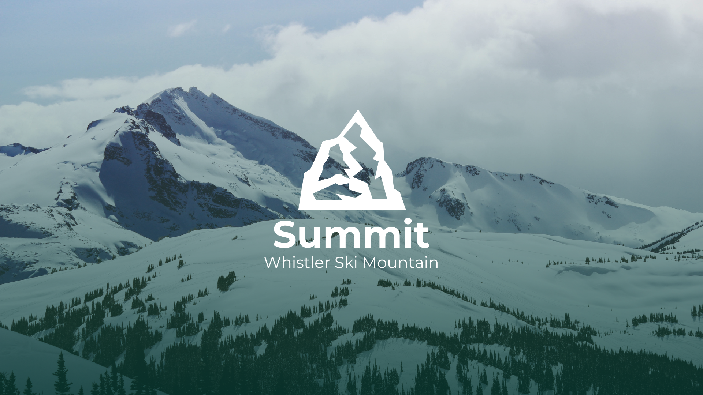

Summit Trail App

Summit Trail App
SIAT Interface Design combines the art and design of human-computer interfaces to test the issues of interactivity in technological systems. This project was completed by me and two other group members on Adobe XD. The goal of the application was to create a prototype of an app of our choice that used at least one of the phones sensors, taking into consideration feasibility, and user research.
Our project, Summit for Whistler Ski Mountain was created as a community-based reviewing system for the trails on Whistler Mountain. Users are able to track their location on the mountain with the phone's GPS and comment on the conditions and difficulties of the trails so that other skiers and snowboarders have a safer and easier time navigating through the slopes.

Initial Design
Starting with the storyboard, I tried to create the different text layouts that would be suitable for the typography. Although it was quite difficult to visualize the animations itself, I attempted to add them into my drawings.
After testing some of the story board ideas into After Effects, some of the initial ideas did not transfer over very well from paper. This was due to my lack of understanding of what After Effects was capable of.
Different concepts such as a virtual camera within a 3D space and manipulating framing became clear as I progressed onto the next steps. After some self-reflecting and a lot of YouTube typography tutorials, the project began to come together.
Final Prototype
Our final prototype took all of our previous iterations into account from class feedback and user testing. The consensus was that our final design needed to be simple and quick to use while out in the cold mountains and be accessible for users of all skill levels. For beginner riders we had the trails difficulties tailored to their skill level while also providing the necessary filtering options for the experts to find the right trail for them.